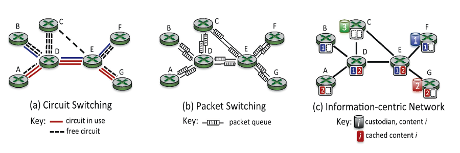
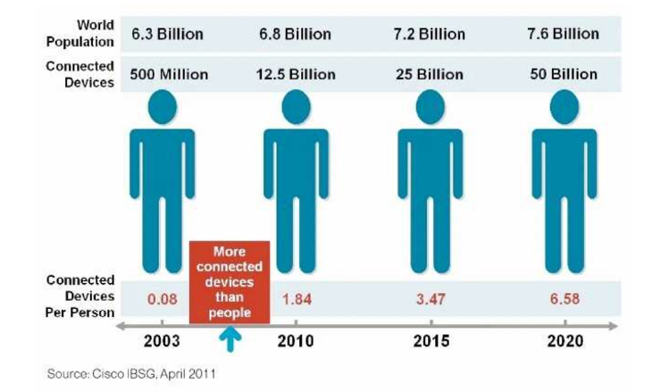
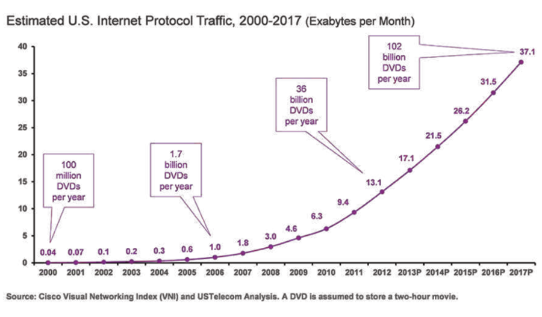
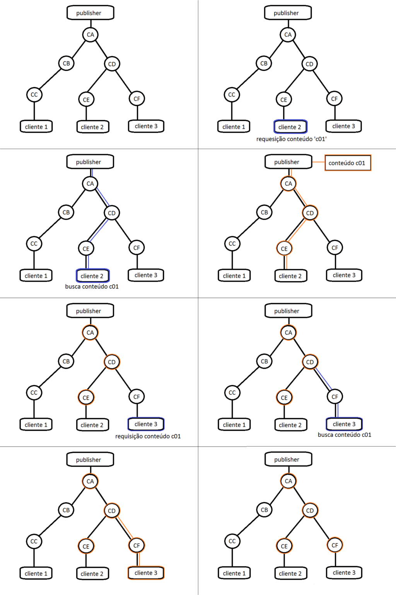

Conceito

Kurose, J., Information-centric networking: The evolution from circuits to packets to content.
Content Centered Networks, Redes Orientadas a Conteúdos, também conhecidas como Information Centered Networks, são uma abordagem alternativa às redes centradas em provedores (TCP/IP) e às baseadas em peers (P2P). Esse modelo abandona os princípios da comunicação ponto a ponto e prioriza o conteúdo presente na rede.
Inicialmente, a comunicação pela internet era feita através da comutação de circuitos, na qual banda era reservada para criar um canal direto de comunicação entre dois nós da rede, não importando o quanto deste canal seja usado de fato, gerando ociosidade. Evoluímos então para a comutação de pacotes, na qual não garantimos um canal de comunicação dedicado, apenas quebramos a mensagem e enviamos “pacotes” através da rede, que utiliza uma política de armazenamento em buffers para tratar congestionamento de nós da rede, o que, por sua vez, gera atrasos na transmissão. Como podemos ver nas imagens 1 e 2, isso escala de maneira ruim, dado que o número de usuários está crescendo rapidamente, e mais que isso, o número de dispositivos conectados gerando requisições cresce ainda mais rapidamente.

Imagem 1. Edens, G., CCN Overview, AAAS meeting, February, 2015

Imagem 2. Edens, G., CCN Overview, AAAS meeting, February, 2015
Com intuito de resolver esses problemas, notando que o foco da comunicação deixa de ser onde um conteúdo está armazenado, mas sim quem irá procurar por aquele conteúdo, surgem as redes centradas no conteúdo, que criam protocolos de busca por conteúdo na rede, agora adaptada para armazenar o conteúdo à medida que ele caminha pela rede, de maneira que requisições de outros usuários busquem por esse conteúdo em nós intermediários na rede, aliviando a carga no servidor que distribui o conteúdo. Um esquema é ilustrado na imagem 3.

Imagem 3. Modelo básico de uma rede centrada a conteúdo. Mostra a interação entre os publicadores (publisher), os caches de nós da rede (Cx), os clientes (cliente x) e os conteúdos (conteúdo cxx).
A grande demanda por conteúdo hoje ocorre na forma de vídeo e aplicações peer-to-peer, principalmente de serviços como o Netflix e o Youtube. Muitas vezes, os usuários destes serviços são notificados na publicação de novo conteúdo, gerando uma requisição direta no servidor, que facilmente congestiona e gera atrasos. Num modelo CCN, cada usuário iria adquirir o conteúdo do nó intermediário da rede mais próximo de si que também possui esse conteúdo armazenado no cache, distribuindo a carga da rede entre os nós intermediários. Dados menos populares terão maior chance de falhar em todos os caches e gerar uma requisição ao servidor, e um dos cuidados a serem tomados é o tempo que se leva procurando um conteúdo na rede antes de ir para o distribuidor.
Vários modelos foram propostos e muitos ainda estão em desenvolvimento. Por se tratar de um paradigma novo e ambicioso, muitos dos desafios que cercam sua implementação ainda estão em discussão.